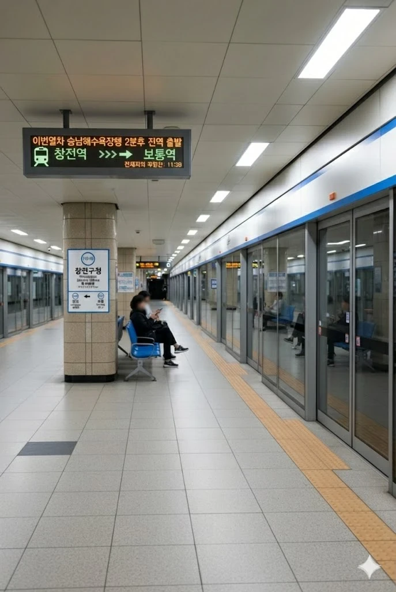

효빈 도시철도 1호선 탄성지선 113-10번 및 창전선 C07번(예정). 효빈광역시 창전구 창전동 2-19에 소재한다. 구청장님도 지하철 타고 출근하신다 카더라.
현재는 1호선 탄성지선의 주요 역이지만, 향후 창전선이 개통되면 환승역이자 급행 열차 정차역으로서 창전구 교통의 핵심 허브로 거듭날 예정이다.
1988년 1호선 창전지선(현 탄성지선) 개통과 함께 영업을 시작한 유서 깊은 지상 역사다. 창전구의 행정 및 상업의 중심지에 위치하고 있어 상시 유동 인구가 넘쳐난다. 본래 창전지선의 종착역이었으나, 2008년 탄성군 연장과 함께 탄성지선으로 개칭되면서 중간역이 되었다.
추후 개통될 창전선은 모노레일 형식으로 지상 3층 높이로 건설되며, 기존 1호선 역사(지상 1층)와 유기적으로 연결될 예정이다. 특히 창전구청역은 창전선 및 1호선 탄성지선 급행 열차가 필수적으로 정차하는 주요 역으로 지정되어, 도심 접근성이 획기적으로 개선될 것으로 보인다.
|
1
C
창전구청역 출구 정보
|
||
|---|---|---|
| 번호 | 주요 시설 및 방향 | 비고 |
| 1 | 창전구청 | |
| 2 | 창전구의회, 창전2동 행정복지센터, 창전고등학교 | |
| 3 | 창전초등학교, 창전중학교 | |
| 4 | 오아초등학교, 칠심1동 행정복지센터, 칠심초등학교 | |
| 5 | 창전사거리 | |
연도별 일평균 승하차 인원 통계다. 창전구의 심장부답게 지선 역임에도 불구하고 3만 명에 육박하는 엄청난 수요를 보여준다. 창전선 개통 시 환승 수요가 더해져 이용객이 더욱 폭증할 것으로 예상된다.
| 창전구청역 이용객 통계 | ||
|---|---|---|
| 연도 | 일평균 이용객 | 비고 |
| 2020년 | 26,516명 | |
| 2021년 | 27,626명 | |
| 2022년 | 29,778명 | |
| 2023년 | 30,120명 | |
| 2024년 | 30,273명 | 안정적인 3만 명대 안착 |

| 창전(완행) / 우전(급행) ↑ | ||||
| 하행 | ㅣ | ㅣ | ㅣ | 상행 |
| ↓ 보통(완행) / 탄성(급행) | ||||
| 상행 | 1 효빈 도시철도 1호선 (완행/급행) | 창전 · 우전 · 창선 방면 (급행 정차) |
| 하행 | 1 효빈 도시철도 1호선 (완행/급행) | 보통 · 탄성 · 승남해수욕장 방면 (급행 정차) |
| 하행 | ㅣ | ㅣ | 상행 |
| ↓ | |||
| 상행 | C 창전선 (완행/급행) | |
| 하행 | C 창전선 (완행/급행) |
주요 연계 노선: